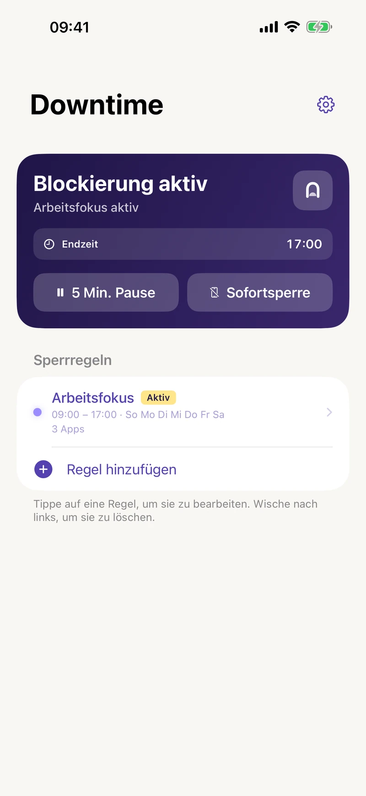
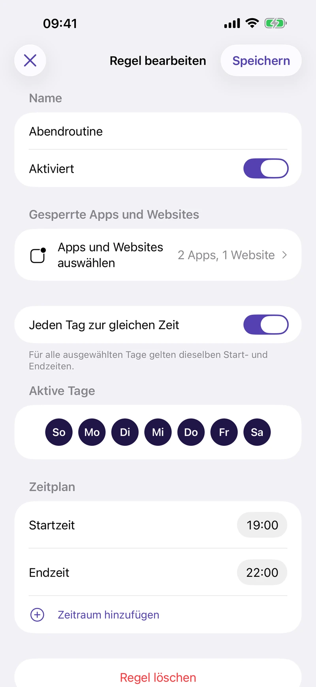
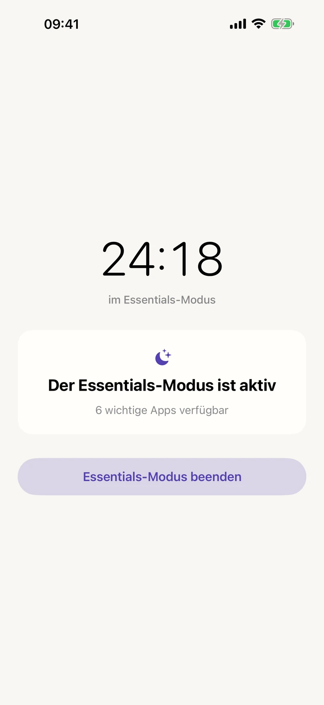
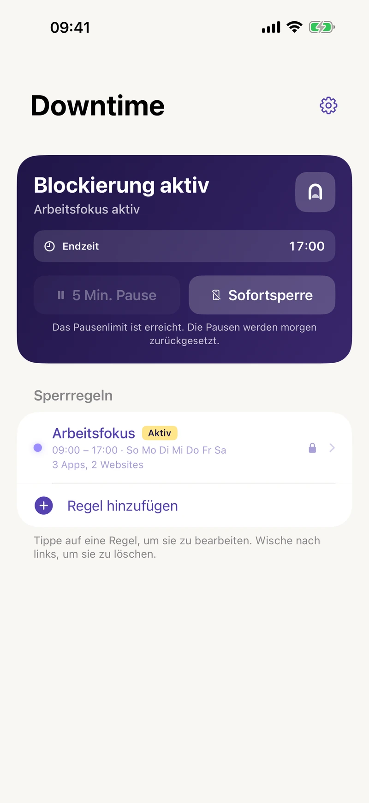

Zeitplan festlegen
Wähle Apps, Kategorien und Websites aus. Lege Tage und Uhrzeiten fest, auch über Mitternacht hinweg. Die Sperre beginnt und endet automatisch.
Deine Routine einrichtenBlockiere ablenkende Apps und Websites nach Zeitplan, starte eine Sofortsperre oder lass nur deine wichtigsten Apps verfügbar.
Eine Sperrregel kostenlos. Pro monatlich oder per Einmalkauf.
Für iPhone und iPad · ab iOS / iPadOS 16

Drei Wege zu weniger Ablenkung
Wähle Apps, Kategorien und Websites aus. Lege Tage und Uhrzeiten fest, auch über Mitternacht hinweg. Die Sperre beginnt und endet automatisch.
Deine Routine einrichtenDu möchtest dich jetzt konzentrieren? Blockiere die Auswahl aller aktivierten Regeln sofort, ohne auf den geplanten Beginn zu warten.
So funktioniert die SofortsperreWähle die Apps, die verfügbar bleiben. Der Essentials-Modus blockiert den Rest. Starte ihn bei Bedarf oder automatisch nach Zeitplan.
Essentials-Modus entdecken
Sperren nach Zeitplan
Arbeitszeit, Lernphase oder Feierabend fürs Handy: Lege fest, wann ablenkende Apps und Websites verfügbar sind. Downtime kümmert sich um die Grenze.
Starte kostenlos mit einer Regel. Mit Pro erstellst du mehrere Regeln für verschiedene Tageszeiten.
Essentials-Modus Pro
Nachrichten, Karten und deine ausgewählten Apps bleiben verfügbar. Der Essentials-Modus blockiert andere Apps, damit dein Handy nützlich bleibt, ohne dich ständig abzulenken.
Starte ihn manuell oder plane ihn für Abende, die Arbeit oder Wochenenden. Der geplante Essentials-Modus hat Vorrang vor normalen Regeln. Danach gelten diese automatisch wieder.
Mehr zum Essentials-Modus

Damit du leichter dranbleibst
Pausiere die Sperre für fünf Minuten. Danach wird sie automatisch fortgesetzt. Mit Pro legst du dein tägliches Kontingent fest: keine, 1, 2, 3, 5 oder unbegrenzt viele Pausen.
Schütze Regeln und Pauseneinstellungen vor spontanen Änderungen. Wenn du den Strict-Modus ausschalten möchtest, beginnt eine einstündige Wartezeit.
Exportiere deine Konfiguration in eine Datei und importiere sie, wenn du deine Einstellungen wiederherstellen möchtest.
Kostenlos starten
Teste eine Sperrregel kostenlos. Alle Pro-Funktionen erhältst du monatlich oder dauerhaft per Einmalkauf.
| Enthaltene Funktionen | Kostenlos | Pro |
|---|---|---|
| Apps und Websites nach Zeitplan sperren | Eine Regel | Mehrere Regeln |
| Zeitpläne je Wochentag und über Nacht | Enthalten | Enthalten |
| Fünfminütige Pausen | Unbegrenzt | Tägliches Kontingent festlegen |
| Sofortsperre | Nicht enthalten | Enthalten |
| Essentials-Modus manuell und nach Zeitplan | Nicht enthalten | Enthalten |
| Strict-Modus | Nicht enthalten | Enthalten |
| Konfiguration sichern und wiederherstellen | Nicht enthalten | Enthalten |
| Ohne Konto und Werbung | Enthalten | Enthalten |
Das monatliche Pro-Abo verlängert sich automatisch bis zur Kündigung. Pro auf Lebenszeit ist ein Einmalkauf. Die aktuellen Preise für deine Region siehst du in der App. Manche bisherigen Nutzer behalten ihren bestehenden Funktionsumfang.
Dein Handy. Deine Entscheidungen.
Deine App- und Website-Auswahl, Regelnamen und Zeitpläne bleiben auf deinem Gerät. Kein Konto, keine Werbung und kein appübergreifendes Tracking.
Produktanalysen und Absturzdiagnosen sind freiwillig. Du entscheidest, ob du Daten teilst, und kannst deine Wahl in den Einstellungen ändern. Diagnoseberichte zu Feedback werden nur gesendet, wenn du das möchtest.
Datenschutzerklärung lesenKurze Anleitungen und Antworten auf deine Fragen.
Mehr Raum zum Arbeiten, Lernen, Schlafen und für alles dazwischen.

Für iPhone und iPad. Starte kostenlos mit einer Sperrregel.